שאלות עם תמונות — אימות תשובות (13)
24A-A-Q2אשכול
אתם מנסים לבצע אשכול (clustering) של מבנה נתונים שנראה כצורה לא-קמורה. איזה אלגוריתם יאפשר לאשכל את הנתונים ל-4 קבוצות, כך שיתקבלו 2 קבוצות עבור העיניים, קבוצה עבור הפה וקבוצה עבור העיגול החיצוני?
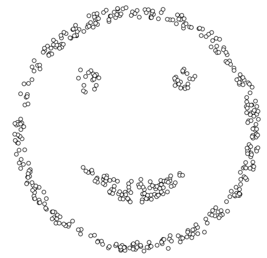
- תשובה ✔DBSCAN
- KMeans עם K=4
- Anomaly detection
- PCA
24A-A-Q9ויזואליזציה ו-EDA
מה ניתן לומר על המתאם בין המאפיינים X1, X2 בכל אחד מהתרשימים הבאים?
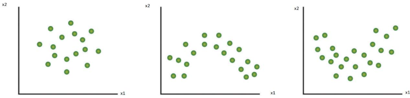
- תשובה ✔בכל הגרפים יש מתאם לינארי קרוב לאפס
- בגרף הימני יש מתאם לינארי חיובי, בגרף האמצעי שלילי ובגרף השמאלי אפס
- בגרף הימני יש מתאם לינארי שלילי, בגרף האמצעי חיובי ובגרף השמאלי אפס
- בגרפים הימני והאמצעי יש מתאמים פרבוליים ובגרף השמאלי מתאם רדיאלי
24A-B-Q1אשכול
אתם מנסים לבצע אשכול (clustering) של מבנה נתונים שנראה כך. איזה אלגוריתם יאפשר לאשכל את הנתונים בצורה הטובה ביותר?
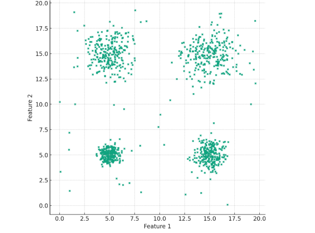
- תשובה ✔אלגוריתם KMeans עם K=4
- אלגוריתם DBSCAN עם eps=4
- אלגוריתם DBSCAN עם eps=5
- אלגוריתם KMeans עם K=5
24A-B-Q11ניקוי נתונים
מהי הדרך המועדפת מבין האפשרויות הבאות כדי למלא את הערכים החסרים בקוד הבא (במקום הפקודה הרשומה כ-XXXX)?
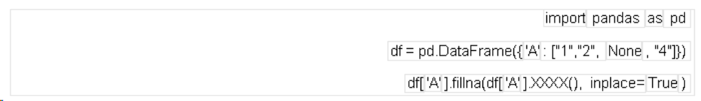
- תשובה ✔mode
- median
- max
- dropna
24A-B-Q2ויזואליזציה ו-EDA
מה ניתן לומר על המתאם בין המאפיינים X,Y בכל אחד מהתרשימים הבאים?
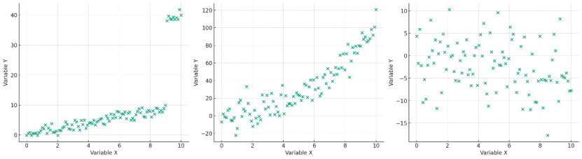
- תשובה ✔בגרף הימני יש מתאם לינארי אפס, באמצעי ובשמאלי חיוביים
- בגרף הימני יש מתאם לינארי שלילי, בגרף האמצעי חיובי ובגרף השמאלי אפס
- בגרף הימני יש מתאם כללי, באמצעי פרבולי ובשמאלי מדורג
- רק בגרף השמאלי יש מתאם חיובי
24A-B-Q9ויזואליזציה ו-EDA
איזו מההשערות הבאות היא הסבירה ביותר על סמך התרשים הפזור שנתון לפניך?
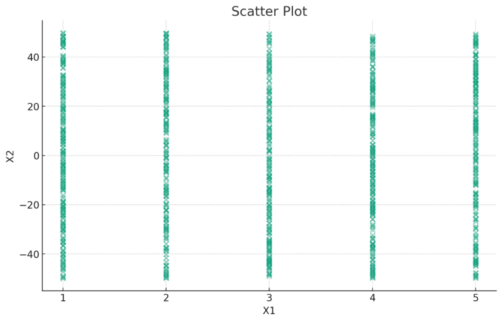
- תשובה ✔ישנם חמישה ערכים ייחודיים של X1, שעבורם יש טווח רחב של ערכי X2, ואין קשר ברור בין המשתנים.
- המשתנה X1 מוצג כמשתנה רציף, והתפלגות הנקודות מצביעה על קשר חזק וברור בין X1 ל-X2.
- המשתנה X1 מוצג כמשתנה רציף, אך למעשה התפלגות הנקודות מראה כי הוא נטען כקטגורי.
- ניתן לראות כי קיים קשר ליניארי בין X1 ל-X2.
24B-A-Q15ויזואליזציה ו-EDA
מה ניתן לומר על המתאם בין המאפיינים X1, X2 בגרף הבא:
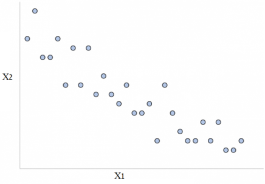
- תשובה ✔ישנו מתאם (קורלציה) לינארית שלילית בין המאפיינים X1 ו-X2
- ישנו מתאם (קורלציה) לינארית חיובית בין המאפיינים X1 ו-X2
- ישנו מתאם (קורלציה) לינארית חיובית חזקה בין המאפיינים X1 ו-X2
- אין כל מתאם (קורלציה) בין המאפיינים X1 ו-X2
24B-A-Q16ניתוח טקסט (NLP)
אילו מחרוזות יכול להחזיר הביטוי הרגולרי הבא:
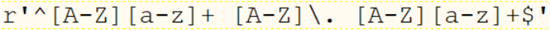
- תשובה ✔שם של בן אדם באנגלית עם תחילית השם האמצעי
- כתובת URL פשוטה
- כתובת דוא"ל (email)
- כל התשובות נכונות
24B-A-Q9מושגי ML ופייתון
השלימו את הפונקציה הבאה:
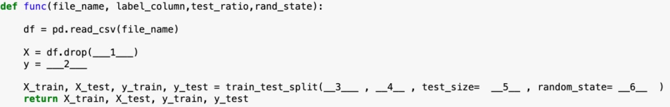
- תשובה ✔
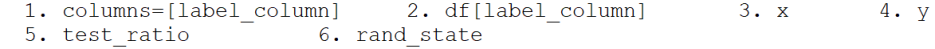
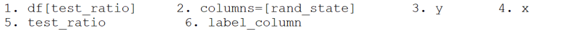
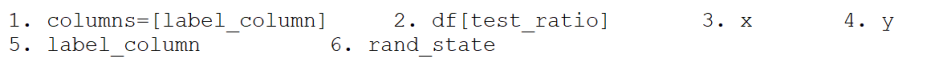
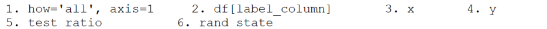
24B-B-Q17ויזואליזציה ו-EDA
מה ניתן לומר על המתאם בין המאפיינים X1, X2 בגרף הבא?
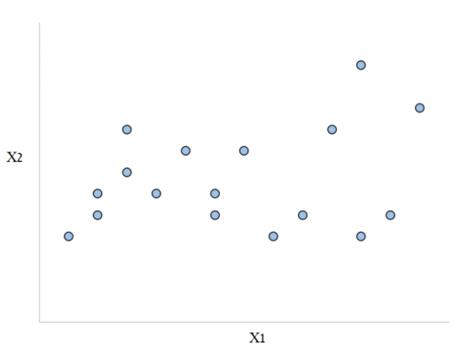
- תשובה ✔ישנו מתאם (קורלציה) לינארית חיובית חלשה בין המאפיינים X1 ו-X2
- לא ניתן לדעת אם יש מתאם (קורלציה) בין המאפיינים X1 ו-X2
- ישנו מתאם (קורלציה) גלית בין המאפיינים X1 ו-X2
- ישנו מתאם (קורלציה) לינארית שלילית חלשה בין המאפיינים X1 ו-X2
25A-A-Q14הערכת מודל
בהינתן המטריצת בלבול (confusion matrix) הבאה, מהו ערך ה-RECALL (במידת הצורך יש לבצע עיגול מתמטי 2 ספרות אחרי הנקודה)?
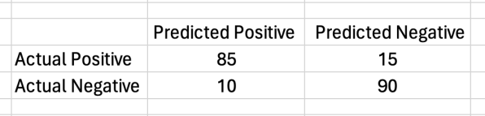
- תשובה ✔0.85
- 0.88
- 0.89
- 0.9
25A-B-Q14ויזואליזציה ו-EDA
עבור הנתונים המוצגים בטבלה להלן, מה השילוב של אמצעי הויזואליזציה המתאים ביותר, על מנת להציג את שלושת ה-features (מאפיינים) בייצוג גרפי בודד?
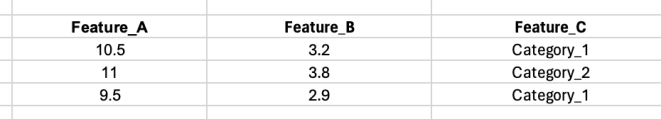
- תשובה ✔להציג scatterplot עם Feature A ו-Feature B בצירים, ועם צבעים עבור Feature C
- להציג scatterplot עם Feature A ו-Feature B בצירים, ועם גודל הסימן עבור Feature C
- לעשות bar plot עם Feature A בציר ה-X ו-Feature B בציר ה-Y, כאשר Feature C ישמש כצבע של העמודה
- זו משימה בלתי אפשרית עקב סוגי הנתונים השונים
26A-A-Q22הערכת מודל
בהינתן המטריצת בלבול confusion matrix הבאה, מהו ערך ה-RECALL? במידת הצורך יש לבצע עיגול מתמטי של 2 ספרות אחרי הנקודה
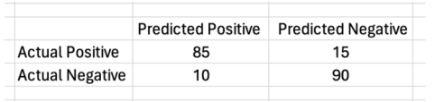
- תשובה ✔0.85
- 0.88
- 0.89
- 0.9